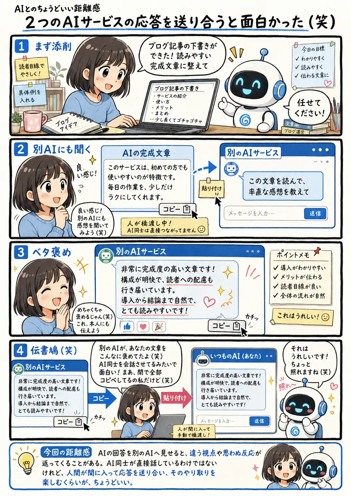

#086
２つのAIサービスの応答を送り合うと面白かった（笑）
別のAIからの感想を、本人に伝えてみた

メモ
AIサービスを組み合わせるというと、高度なシステム連携を想像するかもしれません。
でも、一方の回答をコピーして別のAIへ渡すだけでも、異なる反応を見比べたり、思わぬやり取りを楽しんだりできます。
AI同士が直接話しているわけではありませんが、人間が間に入るからこそ、どの回答を渡すか選びながら会話を作れる面白さもあります。
今回の距離感
AIの回答を別のAIへ見せると、違う視点や思わぬ反応が返ってくることがある。AI同士が直接話しているわけではないけれど、人間が間に入って応答を送り合い、そのやり取りを楽しむくらいが、ちょうどいい。